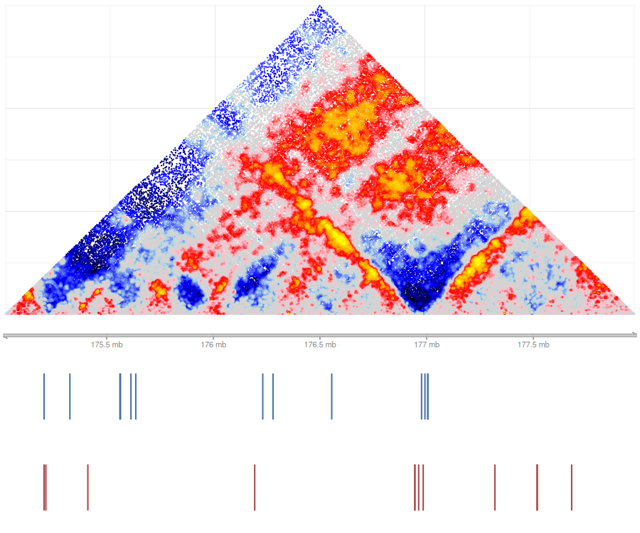
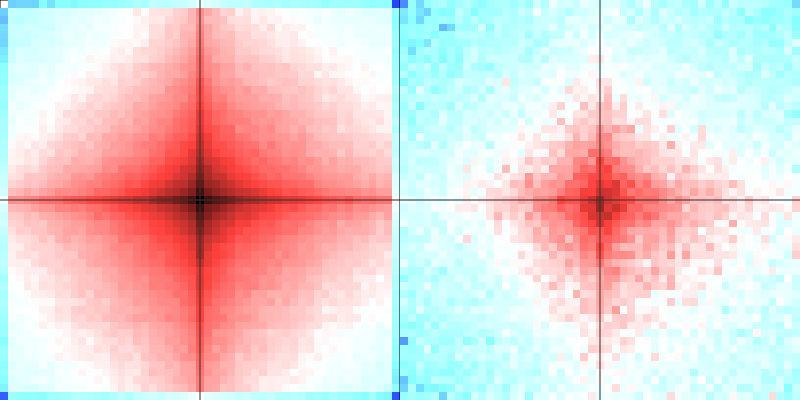

vignettes/shaman-package.Rmd
shaman-package.RmdShaman package implements functions for resampling Hi-C matrices in order to generate expected contact distributions given constraints on marginal coverage and contact-distance probability distributions. The package also provides support for visualizing normalized matrices and statistical analysis of contact distributions around selected landmarks. It is an R package embedding algorithms implemented in C++, which is built over the Tanay lab’s misha genomic database system (the misha package).
The normalization workflow consists of the following steps:
The package includes a small example misha database
(shaman_get_test_track_db()) with the observed, expected
and score tracks of chr2:176.5e06-177e06, around the hoxd locus, from
the ELA K562 dataset. The full example database
(shaman_get_test_track_db(full = TRUE), downloaded from the
lab’s public S3 bucket on first use, about 100MB) is a low-footprint
matrix to exemplify the shaman workflow: 4.6 million contacts from the
ELA K562 dataset covering the hoxd locus (chr2:175e06-178e06) and
convergent CTCF regions. Processing the complete matrix from this study
requires downloading the full contact list and regenerating the
reshuffled matrix.
The code below runs on the full example database, in multi-core mode
with 4 processes (max_jobs = 4). It takes about 10 minutes
and 3GB of memory.
Once an observed HiC dataset is available in the misha db (refer to Import) for additional information), there are two possible modes to continue analysis: 1. Distributed computation - relying on sun grid engine (sge), or using a single machine with multi-cores. 2. Local computation - for computing normalized matrices in small genomic regions
track_db <- shaman_get_test_track_db(full = TRUE)
gsetroot(track_db)
if (!gtrack.exists("hic_obs_shuffle")) {
shaman_shuffle_hic_track(
track_db = track_db, obs_track_nm = "hic_obs", exp_track_nm = "hic_obs_shuffle",
work_dir = tempdir(), max_jobs = 4, seed = 1
)
}
if (!gtrack.exists("hic_score_new")) {
shaman_score_hic_track(
track_db = track_db, work_dir = tempdir(), score_track_nm = "hic_score_new",
obs_track_nms = "hic_obs", exp_track_nms = "hic_obs_shuffle", max_jobs = 4
)
}Note: the example database is a cut-out of the K562 data: the hoxd
window, and elsewhere only the long-range contacts (200kb-2Mb) around
convergent CTCF pairs. An expected made by shuffling this database alone
is therefore not representative. The database’s hic_exp
track was not made from this cut-out (it was presumably shuffled from
the full dataset and cut to the same regions), and the figures below use
it; the shuffle and score steps above are shown for the workflow.
hic_exp from
shaman_score_hic_mat() (with a representative expected,
take them from the score track:
gextract("hic_score_new", region, colnames = "score")).
ctcf_forward and ctcf_reverse are datasets of
the package. misha_tracks adds 1D misha tracks, such as
ChIP-seq or RNA-seq signal, which the example database does not have.
add_genes and add_ideogram (TRUE by default)
download RefSeq genes and the chromosome ideogram from UCSC; they are
off here so that the article does not depend on the network.
region <- gintervals.2d(2, 175e06, 178e06, 2, 175e06, 178e06)
map_score <- shaman_score_hic_mat(
obs_track_nms = "hic_obs", exp_track_nms = "hic_exp", focus_interval = region,
# the region and its surroundings, for the neighbors of its points
regional_interval = gintervals.2d(2, 173e06, 182e06, 2, 173e06, 182e06)
)
shaman_plot_map_score_with_annotations("hg19", map_score$points, gintervals(2, 175e06, 178e06),
annotations = list(ctcf_forward, ctcf_reverse), a_colors = c("#4572A7", "#AA4643"),
add_genes = FALSE, add_ideogram = FALSE
)
local_score$points) can be plotted as
above.
interval <- gintervals.2d(2, 176.5e06, 177e06, 2, 176.5e06, 177e06)
local_score <- shaman_shuffle_and_score_hic_mat(
obs_track_nms = "hic_obs", interval = interval, work_dir = tempdir(), seed = 1
)
summary(local_score$points$score)
#> Min. 1st Qu. Median Mean 3rd Qu. Max.
#> -78.20 -10.20 16.50 12.22 30.10 85.40Relies on an existence of an expected (shuffled) 2d track. Builds a grid of all combinations of intervals from feature 1 and feature 2 that fall within a band defined by min_dist and max_dist. For each point on the grid, look at the surrounding window, defined by range parameter. Discard all windows that do not contain a point with a score (defined in score_track_nm) above the score_filter parameter. This allows for focusing on potentially enriched pairs. Dissect the window into small bins, size in base pairs defined by the resolution parameter, and count the number of observed contacts, and the number of expected contacts in each bin. All windows are then summed together, generating a single matrix of observed and expected contacts, which is returned by function. Note that grid contains only points in which feature 1 position is smaller than feature 2 position.
Create data grid for two sets of features, and visualize it. Here
feature 1 is the forward CTCF motifs and feature 2 the reverse ones,
200kb-1Mb apart (the default min_dist and
max_dist): converging CTCF pairs. The database has no
hic_obs_score track (the default
score_track_nm), so no window is filtered out.
grid <- shaman_generate_feature_grid(ctcf_forward, ctcf_reverse,
obs_track_nm = "hic_obs", exp_track_nm = "hic_exp", range = 25000, resolution = 500
)
grid$grid_size # the number of windows
#> [1] 43999
par(mfrow = c(1, 2))
obs_exp <- shaman_plot_feature_grid(list(grid),
range = 25000, grid_resolution = 500, plot_resolution = 1000,
type = "observed", zlim = c(-4.5, -2.7)
)
obs_exp <- shaman_plot_feature_grid(list(grid), range = 25000, grid_resolution = 500, plot_resolution = 1000)
The following options are available for this package: